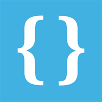
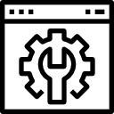

Sites, close to the WEB
( Useful sites for coding )
코딩을 위한 유용한 사이트 모음 (2020.12.30. update)
이미지를 클릭하면 해당 사이트로 이동
-
1. 한줄로 되어있는 CSS파일, js파일을 들여쓰기 해주는 사이트
-
2. 아이콘 가져오기 좋은 사이트
-
3. 인터넷 상에서 다양한 언어로 코딩이 가능한 사이트
-
4. CSS 백과사전
-
5. 무료 웹소스 제공 사이트
-
6. 다이어그램 그릴 수 있는 사이트
-
7. 사이트 등록

beautifier.io
https://beautifier.io/
None Project
https://thenounproject.com/

Flaticon
https://www.flaticon.com/

css-tricks
https://css-tricks.com/

웹쟁이
https://www.webjangi.com/
Draw.io
https://app.diagrams.net/

GitHub
https://github.com/